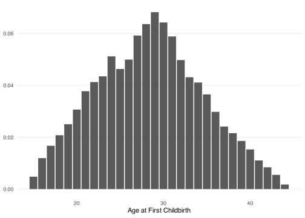
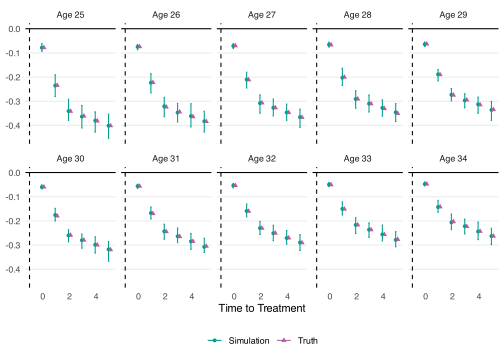
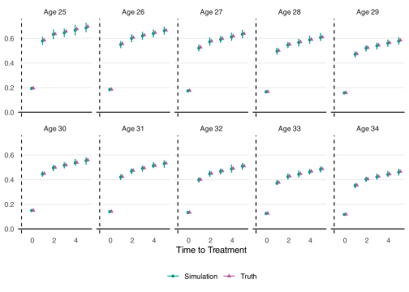

library(unitdid)
library(dplyr)
library(ggplot2)
library(purrr)Data Generation Process of base_heterocp
Data Generation Process
The sample data set base_heterocp is generated by unitdid::gen_heterocp() with seed 1234.
set.seed(1234)
base_heterocp <- gen_heterocp()Inside the function gen_heterocp(), the following steps are performed.
1. Generate \(i = \{1, \dots, 1000\}\) individuals
Generate \(i = \{1, \dots, 1000\}\) individuals with age at child birth \(a_i\) from a multinomial distribution of \(f(a)\).
\[ f(a) = \begin{cases} \frac{a - 14}{15 \cdot 16} & \text{if } a \in \{15, \dots, 29\} \\ \frac{45 - a}{15 \cdot 16} & \text{if } a \in \{30, \dots, 44\} \\ \end{cases} \]
Code
base_heterocp |>
distinct(id, .keep_all = TRUE) |>
mutate(event_age = cyear - byear) |>
summarize(n = n(), .by = event_age) |>
mutate(density = n / sum(n)) |>
ggplot(aes(x = event_age, y = density)) +
geom_col() +
labs(x = "Age at First Childbirth", y = NULL) +
theme_minimal() +
theme(panel.grid.minor = element_blank(),
panel.grid.major.x = element_blank())
2. Generate Individual FE \(\alpha_i\) and Time FE \(\lambda_t\)
Generate individual fixed effects \(\alpha_i\) and time fixed effects \(\lambda_t\) from normal distributions.
\[ \alpha_{i} \sim \mathcal{N}(0.15, 0.1),\, \lambda_{t} \sim \mathcal{N}(0, 0.1) \]
3. Generate Heterogeneous Treatment Effect \(\tau_{i, k}\)
For individual \(i\) with age at first childbirth \(a_i\), draw \(\tau_{i, k} \sim \mathcal{N}(\mu(a_i, k), \sigma(a_i, k))\) where
\[ \begin{aligned} \mu(a) &= -1.2 + 0.3\log(a) \\ \sigma(a) &= 2.8 - 0.8\log(a) \\ \mu(a, k) &= \begin{cases} \frac{1}{3}\mu(a) & \text{if } k = 0 \\ \mu(a) & \text{if } k = 1 \\ 0.05 + 1.5\mu(a) - 0.01k & \text{if } k \ge 2 \\ \end{cases} \\ \sigma(a, k) &= \begin{cases} \frac{1}{3}\sigma(a) & \text{if } k = 0 \\ \sigma(a) & \text{if } k = 1 \\ 0.01 + \sigma(a) + 0.01k & \text{if } k \ge 2 \\ \end{cases} \end{aligned} \]
4. Generate Outcome \(y_{it}\)
\[ y_{it} = \alpha_i + \lambda_t + \tau_{i, k} + \varepsilon_{it} \]
where \(\varepsilon_{it} \sim \mathcal{N}(0, 025)\).
Simulation
To see its estimation properties, I simulate the data set 100 times and compare the true values with the mean, 2.5% quantile, and 97.5% quantile of the estimated values.
Code
set.seed(1234)
n_sim <- 100
sim <- function() {
mdl_base <- gen_heterocp(size_cohort = 1000) |>
unitdid(yname = "y",
iname = "id",
tname = "year",
ename = "cyear",
bname = "byear",
compute_varcov = "var")
summary(mdl_base, agg = "event_age")
}
path_sim <- here::here("vignettes/simulated.rds")
if (!file.exists(path_sim)) {
simulated <- map(1:n_sim, ~sim(), .progress = TRUE) |>
list_rbind()
save(simulated, file = path_sim)
} else {
load(path_sim)
}Code
val_true <- tibble(
event_age = 25:34,
tau1 = -1.2 + 0.3 * log(event_age),
sd1 = 3 - 0.75 * log(event_age)) |>
slice(rep(1:n(), each = 6)) |>
mutate(rel_time = rep(0:5, 10),
mean = case_when(
rel_time == 0 ~ tau1 / 3,
rel_time == 1 ~ tau1,
rel_time > 1 ~ 0.05 + 1.5 * tau1 - 0.02 * rel_time),
sd = case_when(
rel_time == 0 ~ sd1 / 3,
rel_time == 1 ~ sd1,
rel_time > 1 ~ 0.01 + sd1 + 0.02 * rel_time),
lbl = "Truth") |>
select(-c(tau1, sd1))
df_plot <- simulated |>
mutate(sd = sqrt(var)) |>
summarize(across(c(mean, sd),
list("lci" = ~quantile(.x, 0.025),
"rci" = ~quantile(.x, 0.975))),
across(c(mean, sd), mean),
.by = c(event_age, rel_time)) |>
mutate(lbl = "Simulation") |>
bind_rows(val_true) |>
mutate(lbl_facet = paste0("Age ", event_age)) |>
filter(between(event_age, 25, 34))Mean of \(\tau_{ik}\)
Code
df_plot |>
ggplot(aes(x = rel_time, y = mean,
ymin = mean_lci, ymax = mean_rci,
color = lbl, shape = lbl)) +
geom_point(position = position_dodge(width = 0.3)) +
geom_errorbar(width = 0.2,
position = position_dodge(width = 0.3)) +
geom_vline(xintercept = -1, linetype = "dashed") +
geom_hline(yintercept = 0) +
scale_color_manual(values = c("#009F8C", "#B75C9D")) +
facet_wrap(~lbl_facet, ncol = 5) +
labs(x = "Time to Treatment", y = NULL,
color = NULL, shape = NULL) +
theme_minimal() +
theme(panel.grid.minor = element_blank(),
panel.grid.major.x = element_blank(),
legend.position = "bottom")
Standard Deviation of \(\tau_{ik}\)
Code
df_plot |>
ggplot(aes(x = rel_time, y = sd,
ymin = sd_lci, ymax = sd_rci,
color = lbl, shape = lbl)) +
geom_point(position = position_dodge(width = 0.3)) +
geom_errorbar(width = 0.2,
position = position_dodge(width = 0.3)) +
geom_vline(xintercept = -1, linetype = "dashed") +
geom_hline(yintercept = 0) +
scale_color_manual(values = c("#009F8C", "#B75C9D")) +
facet_wrap(~lbl_facet, ncol = 5) +
labs(x = "Time to Treatment", y = NULL,
color = NULL, shape = NULL) +
theme_minimal() +
theme(panel.grid.minor = element_blank(),
panel.grid.major.x = element_blank(),
legend.position = "bottom")